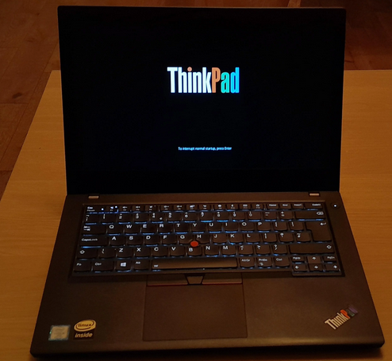

<main>
<article>
<h1>ThinkPad T480 (2018)</h1>

<p style="text-align:center;">
  
</p>

<p>
O ThinkPad T480 é considerado por muitos o último ThinkPad verdadeiramente
<b>"modular"</b>.
</p>

<p>
Ele permite upgrades de RAM, armazenamento e bateria de forma relativamente
simples, algo cada vez mais raro em laptops modernos.
</p>

<h2>Especificações</h2>

<ul>
  <li><b>CPU:</b> Intel 8th Gen Core</li>
  <li><b>RAM:</b> até 32 GB</li>
  <li><b>Bateria:</b> sistema PowerBridge</li>
  <li><b>Porta:</b> Thunderbolt</li>
</ul>

<p>
Por isso, o T480 tornou-se extremamente popular entre usuários que buscam
uma máquina moderna, mas ainda reparável.
</p>
</article>


</main>
</body>
</html>

